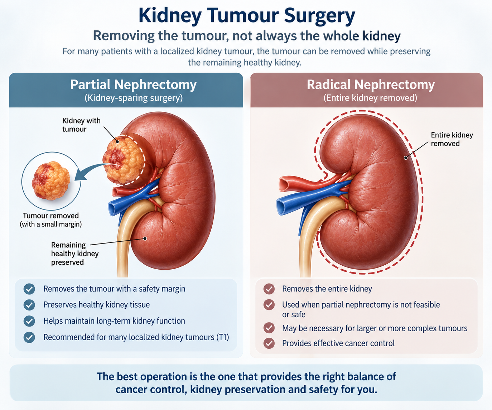

Being diagnosed with a kidney tumour can be worrying. One of the first questions patients ask is: “Will my entire kidney have to be removed?”
This kidney-sparing approach is called a partial nephrectomy. When appropriate, it can be performed using a robotic-assisted approach, giving the surgeon a magnified, precise view of the tumour and the surrounding healthy kidney.
What is partial nephrectomy?
A partial nephrectomy removes the kidney tumour with an appropriate margin while preserving the rest of the kidney. A radical nephrectomy, in contrast, removes the entire kidney.
For many localized kidney cancers, particularly T1 tumours, international guidelines recommend partial nephrectomy when technically feasible and oncologically appropriate.
EAU Guidelines on Renal Cell Carcinoma ↗
The aim is simple:

Why preserve the kidney?
Preserving functioning kidney tissue can be particularly important for patients with:
- Reduced kidney functionEvery remaining nephron helps protect long-term renal reserve.
- Diabetes or hypertensionConditions that already place ongoing strain on the kidneys.
- A solitary kidneyWhere preserving function is critical to avoiding dialysis.
- Tumours in both kidneysRemoving an entire kidney is rarely an option here.
- Chronic kidney diseaseWhere any further loss of function carries added risk.
Although people can live well with one kidney, preserving renal function may reduce the risk of future kidney problems.
Does every kidney tumour need partial nephrectomy?
No. The decision depends on several factors:
- Tumour sizeSmaller tumours are often suitable, but size alone does not determine feasibility.
- Tumour locationA tumour on the outer part of the kidney may be easier to remove than one deep inside the kidney or close to major blood vessels or the collecting system.
- Tumour complexityCT or MRI helps determine how difficult the tumour will be to remove while preserving healthy kidney.
- Kidney functionPreserving kidney tissue becomes particularly important when renal function is already reduced or there is only one functioning kidney.
- Cancer characteristicsCancer control always remains the priority.
What is robotic partial nephrectomy?
Robotic partial nephrectomy is a minimally invasive operation in which the surgeon removes the kidney tumour while preserving the remaining kidney. The surgeon operates using a robotic surgical system that provides:
- Magnified, high-definition visualizationA close, detailed view of the tumour and surrounding kidney tissue.
- Three-dimensional viewsDepth perception that helps judge the tumour's exact boundaries.
- Articulated instrumentsWristed tools that move and reconstruct tissue with fine control.
- Precise controlDuring both tumour removal and kidney reconstruction.
Importantly, the robot does not perform the surgery independently—the surgeon remains in control throughout the procedure. Robotic surgery can be particularly useful for technically complex kidney-sparing procedures.
What happens during surgery?
The kidney and tumour are carefully exposed and the tumour anatomy is assessed. The renal blood supply may be temporarily controlled to reduce bleeding during tumour removal. The tumour is then excised while aiming to preserve healthy kidney tissue.
The remaining kidney is reconstructed, and the removed tumour is sent for pathological examination. The exact technique depends on the tumour’s location, size and complexity.
Partial vs radical nephrectomy
| Partial nephrectomy | Radical nephrectomy |
|---|---|
| Removes the tumour | Removes the entire kidney |
| Preserves healthy kidney tissue | No remaining tissue from that kidney |
| Kidney-sparing approach | Used when partial surgery isn’t appropriate |
| Often preferred for suitable T1 tumours | May be safer for some complex tumours |
Partial nephrectomy is not automatically better for every patient. A complex partial nephrectomy that carries unacceptable risks may not be preferable to a safe radical nephrectomy. The best operation is the one that provides the right balance of cancer control, kidney preservation and safety.
Can a large tumour be treated with partial nephrectomy?
Sometimes. Tumour size is only one part of the decision. Some larger or complex tumours can be treated with partial nephrectomy in selected patients, particularly when kidney preservation is important. In other situations, radical nephrectomy may provide a safer and more appropriate cancer operation.
What tests are needed?
A contrast-enhanced CT or MRI is usually central to surgical planning. It helps assess:
- Tumour size and locationEstablishes the anatomy the surgical plan is built around.
- Depth within the kidneySuperficial tumours are generally more straightforward to excise.
- Relationship to blood vesselsProximity to major vessels affects both risk and technique.
- Relationship to the collecting systemAffects the reconstruction after tumour removal.
- Involvement of surrounding structuresConfirms whether the tumour is confined to the kidney.
Kidney function is also assessed. In selected patients, a renal mass biopsy may be considered if the result could change treatment.
What are the risks?
Like any major operation, robotic partial nephrectomy can involve risks such as:
- BleedingThe kidney is a highly vascular organ.
- Urine leakageFrom the site of reconstruction of the collecting system.
- InfectionAs with any surgical procedure.
- Injury to surrounding structuresNearby organs, vessels or bowel.
- Reduction in kidney functionEven with tissue-sparing technique.
- Positive surgical marginsTumour cells found at the edge of the removed tissue.
- Need for additional surgeryIn a small proportion of cases.
The risks depend greatly on the individual tumour and patient.
What happens after surgery?
The tumour is examined by a pathologist to determine its type, grade, stage and margin status. This information helps determine the appropriate follow-up and surveillance plan.
The bottom line
For appropriately selected patients, partial nephrectomy can treat the tumour while preserving healthy kidney tissue. Robotic surgery provides a minimally invasive approach for performing this operation in suitable patients.
The goal should not be robotic surgery at all costs.
If you have been diagnosed with a kidney tumour, a detailed review of your CT/MRI, kidney function and tumour anatomy can help determine whether partial nephrectomy, radical nephrectomy, surveillance or another treatment is appropriate.
AUA Guideline: Renal Mass and Localized Renal Cancer ↗
Diagnosed with a kidney tumour?
Bring your CT or MRI and any prior kidney function tests. A focused review of your scans is the fastest way to know whether kidney-sparing surgery is right for you.
Book Your Consultation